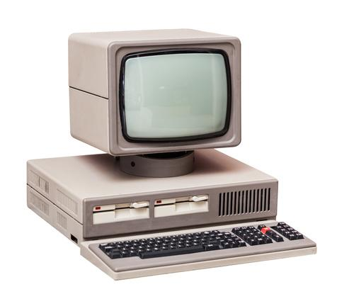

PCの歴史
| 年・名前 | 説明 | 画像 |
|---|---|---|
| 1970年 Altair8800 |
現在親しまれているパーソナルコンピュータの原型ともいえる組み立て式のコンピュータ |  |
| 1980年 PC-9801 |
このパソコンは、それまで使用されていたアメリカ製のパソコンと異なり、日本語入力に長けていた。 シリーズ名にある98から「キューハチ」として親しまれるようになった。 | |
| 1990年 DOS/Vパソコン |
これまでのパソコンには、日本語表示がなかったことに対し、このDOS/Vパソコンはキーボードからの入力やファイルの保存などを日本語で処理することを可能にした。 しかし、かなり高価な存在だった。 | |
| 2000年 Windows XP |
それまでのパソコンの歴史ではデスクトップが主流であったものが、ノートパソコンが主流の時代へと変化をとげた。 |